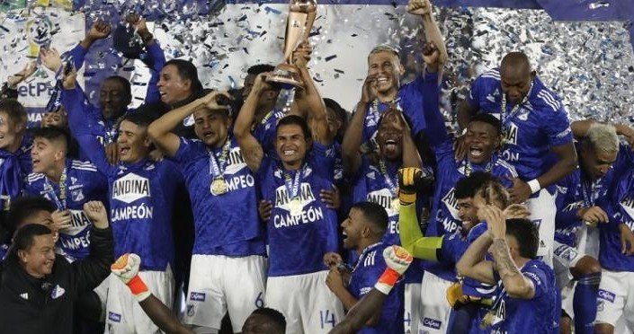

Desde 2012, Millonarios experimentó un resurgimiento significativo. El año culminó con la obtención de la anhelada estrella 14 al vencer al Medellín en una emocionante final por penales, marcando el fin de una larga sequía liguera. Tras algunos periodos de inconsistencia, el proyecto deportivo se fortaleció, y en el segundo semestre de 2017, bajo la dirección de Miguel Ángel Russo, el equipo celebró su estrella 15 tras derrotar a su clásico rival, Independiente Santa Fe, en la final. La Superliga de 2018 llegó como otro título para las vitrinas azules, superando al Atlético Nacional. El club se mantuvo como un contendiente habitual en la liga, alcanzando varias instancias finales y asegurando participaciones en torneos internacionales. En 2022, la Copa Colombia se sumó a los logros recientes, con una victoria sobre el Junior de Barranquilla. Este título consolidó el buen momento del equipo. El primer semestre de 2023 fue especialmente exitoso, con la consecución de la estrella 16 de la Liga BetPlay I-2023, nuevamente frente al Atlético Nacional en una final muy disputada. A inicios de 2024, obtuvo su segunda Superliga, otra vez contra el Junior. En la actualidad, lidera la Liga BetPlay 2025 bajo la dirección de David González, destacándose por su solidez defensiva y aspirando a la estrella 17.
